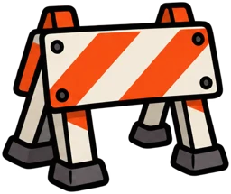

53.5324°N / 113.5119°W
THE CITY
GET OUT.
START HERE GO SOMEWHERE GOOD
(01 — THE CREW) EVERYONE GETS A PLACE. ↙
A LITTLE MOVEMENT. A LOT OF CONNECTION. + Your pace is welcome here.
Metro Zoomin’ brings people together through running, walking, and finding a reason to get outside. Come for the miles. Stick around for the conversations that go absolutely nowhere.
First run? You already belong.
LESS OVERTHINKING. MORE “SEE YOU THERE.”
(02 — A CHANGE OF SCENERY) MAKE ROOM FOR A LITTLE DETOUR.
TAKE THE LONG WAY. RGC → RIVER VALLEY → NEW FRIENDS KEEP EXPLORING ↓
(03 — THE CITY IS YOUR TRACK) A LITTLE PLAY. A LOT OF ZOOM.
KEEPZOOMIN’.
A little detour before your next real run.
Jump the roadblocks. Grab the water drops.
Find the next club run
Your browser does not support the game canvas. You can still explore the club and next-run details below.
YOUR CITY. YOUR LITTLE DETOUR. LET’S Ten bars. Water to keep you going.
Play Zoom Run Meet the crew in real life
SPACE / ↑ TO JUMP TAP THE TRACK TO JUMP · WATER +1 BAR· HAZARDS −1 BAR
Restart Jump ↑
WATCH YOUR STEP Banana peel Ice patch 
RoadworksPotholes Play is optional. Pause anytime. Reduced-motion mode keeps the background still.
Game ready. Ten lifespan bars.
Zoom Run needs JavaScript to play. The run club details are available below.
(04 — SET YOUR OWN TEMPO) THERE’S ROOM FOR EVERY RHYTHM.
YOUR PACE.OUR PLACE. Some days you want to cruise.
WALK IT. ↗ Start with a stroll. Find a conversation. Walk and run-walk rhythms have a place here.
EASY DOES IT / NO RUSH JOG IT. ↗ A comfortable rhythm with enough breath left for a good chat. Settle in with people moving at your speed.
SOCIAL MILES / GOOD CONVERSATION ZOOM IT. ↗ Feeling lively? Find your flow. Keep an eye on the crew, and check the next run’s route and pace details.
A LITTLE EXTRA / SAME CREW
IN GOOD COMPANY ＋
NO RUSH. YOU’RE RIGHT ON TIME. Play
(05 — YOUR NEXT MOVE) EDMONTON, ALBERTA ↙
SAME CITY.NEW PEOPLE.
THE NEXT COMMUNITY RUN See you Meet us at Royal Glenora Parking Lot on Wednesdays at 18:00. A few kilometres, a familiar city, and a good reason to get outside.
Plan your first run ↗
WHERE Royal Glenora Parking LotOur starting point for good miles.
WHEN 18:00 on WednesdaysStart times may shift with the seasons.
WHO You, probably.Walkers, joggers, runners, first-timers.
BRING Yourself. Your shoes.Water and a little curiosity help too. YOU ARE HERE ↗ GOOD THINGS AHEAD